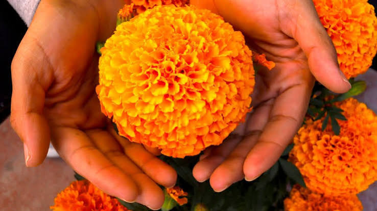
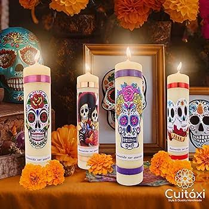
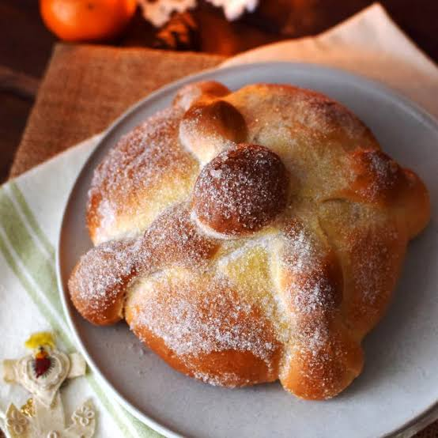
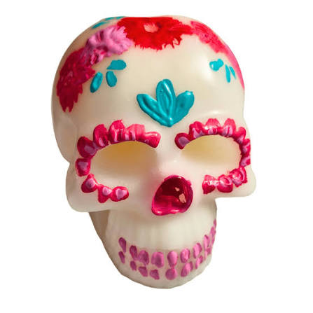
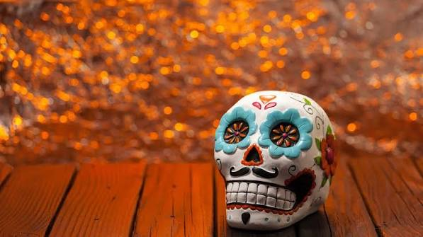

ESTOS SON LOS ELEMENTOS DE UN ALTAR DE MUERTOS

Flor de cempasúchil
Su color naranja brillante y aroma ayudan a guiar a las almas hacia el altar (también se usan pétalos para hacer un camino).

Velas
Las veladoras en el Día de Muertos simbolizan la luz, la fe y la esperanza, funcionando como un faro o guía espiritual para que las ánimas encuentren el camino de regreso a sus hogares

Pan de muerto
Representa la fraternidad, la generosidad de la tierra y el ciclo de la vida y la muerte.

Calaveritas de azúcar
son dulces tradicionales de México que se colocan en los altares del Día de Muertos (1 y 2 de noviembre) para honrar a los fieles difuntos

Fotografía del difunto
Se coloca en la parte superior para identificar a la persona a quien se dedica la ofrenda.